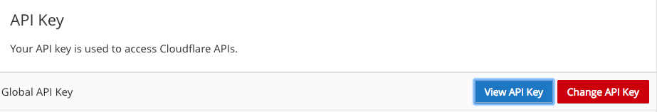
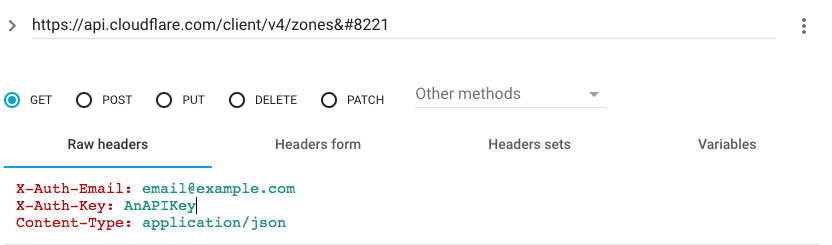

Bypassing the Blacklist
With the increasing frequency of Mojang blacklisting servers, it is becoming increasingly important for server owners and players to learn how to circumnavigate the blacklist.
SquidHQ
SquidHQ is a client that bypasses the EULA blacklist. This client contain no other modifications other than allowing players to join blacklisted servers. The client is open source, the source is available on Github. Servers can also reward players for using SquidHQ via the SquidHQ plugin.
SRV Bypass
Servers can bypass the blacklist by using an SRV record to point their domain to another domain, thus fooling the blacklist. However, Mojang does try to blacklist these domains as well. Servers have to constantly get new domains that aren't blacklisted by Mojang to set in their SRV records
The steps for setting up an SRV record are relatively simple:
- Get a domain from either DDNS or NOIP which are free or by buying one from Namecheap or another registrar. Using a free subdomain service is recommended due to the fact that they are free and Mojang cannot blacklist the root domain.
- Login into your main domain's registrar. For example, if your server IP was play.example.com you would want to login to example.com registrar.
- Go the "DNS records" section of your domain. If you don't know where this is, contact your domain registrar
- Add a new SRV record. If your registrar does not offer SRV records you should switch to Cloudflare.
- Set the service to _minecraft, set the protocol to _tcp. Don't mess with priority or weight. Set the port to 25565 or the port your server is running on. Set the target to the domain you got earlier.
- Click the "Done" button or checkmark to submit the SRV record. Mojang may blacklist the target domain within your SRV record, so you may need to change it every few days.
Automating SRV Records
Automating the updating of SRV records allows a server to instantly switch over to a SRV target when Mojang blacklists the current one.
- First, switch to Cloudflare. The automating program only supports Cloudflare and the Cloudflare API
- Second, make an SRV record for the server IP to be pointed to. You can follow the steps in the section above to create one. This program currently only supports the port 25565.
- Get your Cloudflare API Keys. Login to Cloudflare and click on "My Profile" on the top right of the page and scroll to "Global API Key." If you do not have any api keys, make sure to generate some. Next to "Global API Key" Select "View API Key." Make sure to copy the set of characters in the box.
 - Download Automatic SRV Rotator and run it. It should generate config.json and domains.txt. Paste your API Key between the quotes to the right of "X-Auth-Key". Type your Cloudflare account email between the quotes beside "X-Auth-Email"
- You are going to need your Zone ID. For this using a REST Client is recommended. An example of one is Advanced REST Client for Google Chrome. Other extensions exist on other browsers as well.
- Open the REST Client and use it to send a GET Request to https://api.cloudflare.com/client/v4/zones parameters should look like as follows:

Make sure to put in information for X-Auth-Email and X-Auth-Key - A response should come back looking something like this:
{ "result": [ { "id": "132344xjrjjq12344", "name": "example.com", "status": "active", "paused": false, "type": "full", "development_mode": 0, "name_servers": [ "dora.ns.cloudflare.com", "hank.ns.cloudflare.com" ] }Copy the ID of the domain you want to have modified into the config.json of the MinecraftSRVRotator. This is the ZoneID and goes between the quotes across from ZoneID.{ "X-Auth-Email":"youremail@emailprovider.com", "X-Auth-Key":"[My Cloudflare API Key]", "zone_id":"132344xjrjjq12344", "record_id":"" } - Now the Record ID is needed. Open the REST Client and change the URL to send the request to. Make sure to have the Zone ID handy. Send the request (with the same headers as before) to https://api.cloudflare.com/client/v4/zones/The ZONE ID/dns_records Replace "THE ZONE ID" with the zone id in the config.json that was retrieved before. All the DNS records should show up as the response. Search for the SRV record inside that response. Once you find it, get the ID for it and put it in the config.json. The config.json is now complete!
{ "X-Auth-Email":"youremail@emailprovider.com", "X-Auth-Key":"[My Cloudflare API Key]", "zone_id":"132344xjrjjq12344", "record_id":"[My Record ID]" } - Get some domains that point to the Server's IP. The sections above explain this. Make a good amount of domains, you might make more or less depending on how often you get blacklisted. Take these domains and put them into domains.txt. Make sure each domain has its own line. Example:
bypassblacklist1.ddns.net bypassblacklist2.ddns.net bypassblacklist3.ddns.net bypassblacklist4.ddns.net bypassblacklist5.ddns.net
- Add MinecraftSRVRotator.jar to a cron job or automatic program executor of your choice. You can run it every 5 minutes, 15 minutes, or every hour. Shorter intervals are recommended because srv records will be replaced quicker. This program will check if the current SRV target is blacklisted, if it is it will go to domains.txt, find the nearest unblacklisted target, and set the SRV record to that target.
- All steps are completed. Be sure to spread the word about how to bypass the EULA!
{
"X-Auth-Email":"youremail@emailprovider.com",
"X-Auth-Key":"[My Cloudflare API Key]",
"zone_id":"",
"record_id":""
}